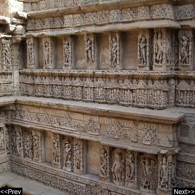

Rani ki vav
Rani ki vav is an intricately constructed stepwell situated in the town of Patan in Gujarat, India. It was added to the list of UNESCO's World Heritage Sites on 22 June 2014.
Address:
Mohan Nagar Socity, Patan, Gujarat 384265